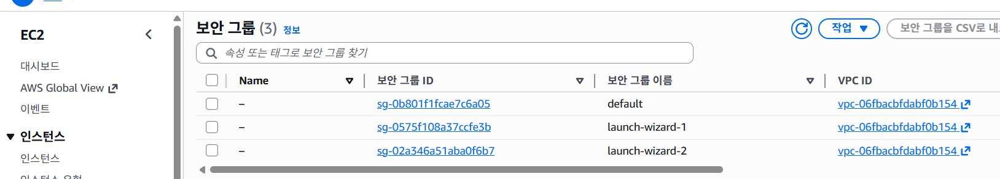
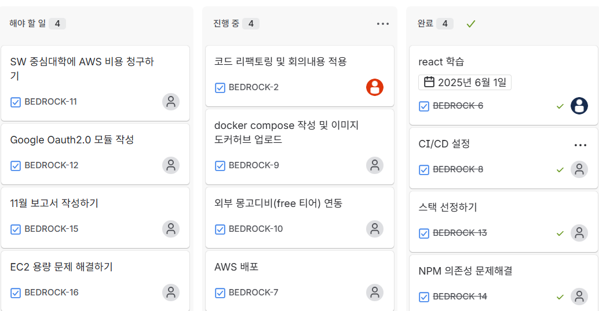
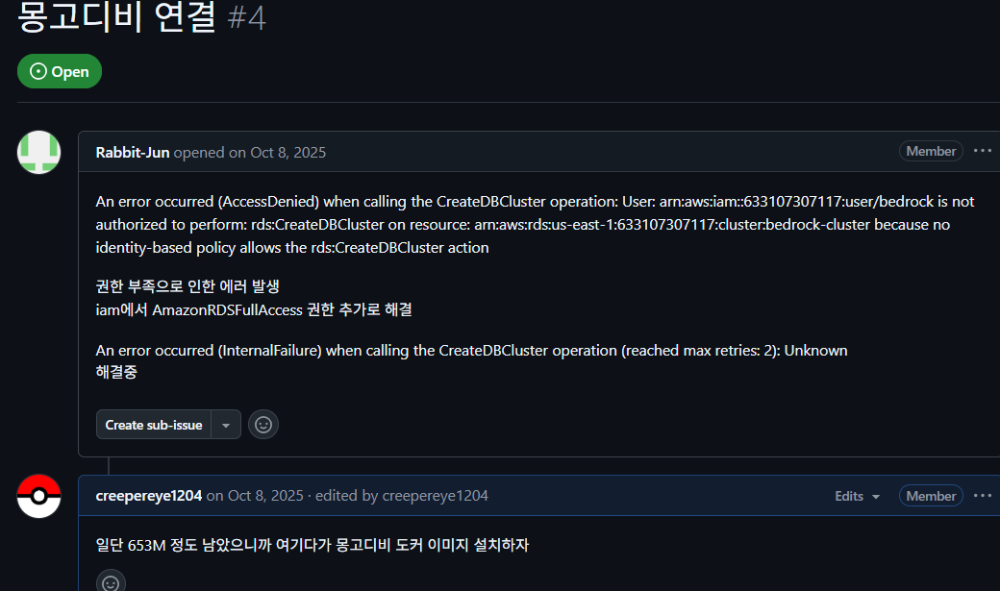

클라우드 기반의 드래그 앤 드롭
인터랙티브 스케줄링 시스템
일정을 중요도와 남은 기간을 축으로 하는 X, Y 좌표 평면 위에 시각적으로 배치하여 관리 효율을 극대화한 프로젝트입니다. 리스트 방식의 한계를 넘어 드래그 앤 드롭 인터랙션을 통해 직관적이고 공간적인 일정 관리 경험을 제공합니다.
시스템 시연 (System Preview)

외부 리스트에서 차트로 일정을 드롭하여 즉시 시각화하는 핵심 인터랙션
문제 해결 핵심
배포 시 정적 파일의 즉각적인 갱신을 위해 Cache Busting을 적용했습니다. 사용자 브라우저의 구버전 캐시 문제를 원천 차단하여 일관된 UX를 제공합니다.
Jira를 통해 전체 워크플로우를 가시화하고, GitHub Issues로 코드 레벨의 기술적 병목을 해결하며 팀 개발 생산성을 극대화했습니다.
MongoDB를 채택하여 일정의 다양한 메타데이터를 유연하게 수용했습니다. RDBMS 대비 잦은 기획 변경에도 빠른 대응이 가능한 구조를 갖췄습니다.
Google ID Token 백엔드 검증 방식을 도입하여 보안성과 인증 속도를 동시에 개선했습니다. 사용자별 독립적인 데이터 공간을 안전하게 확보하는 기반이 되었습니다.
데이터 모델 및 클래스 설계 (Class Architecture)
MongoDB의 유연성을 활용하기 위해 Pydantic과 Beanie ODM을 결합한 객체 지향적 데이터 모델을 설계했습니다.
- 상속 구조: 공통 필드는 `Plan` 베이스 클래스에 정의하고, DB 영속성이 필요한 필드는 `PlanModel`에서 확장하여 중복을 제거했습니다.
- 유연한 확장: `extra='allow'` 설정을 통해 런타임에 동적으로 추가되는 일정 속성(NoSQL 장점)을 객체 레벨에서 수용합니다.
- 관심사 분리: API 요청/응답(Schema)과 실제 DB 모델(Document)을 분리하여 보안 및 데이터 정합성을 유지합니다.
시스템을 지탱하는 기술 및 도구
클라우드 시스템 아키텍처
AWS EC2를 활용

무료 티어로 진행하였습니다.
전략적 의사결정 및 트레이드오프
01. Nginx 캐시 버스팅 (Performance vs Freshness)
- 고민의 시작: 잦은 업데이트 과정에서 사용자 브라우저에 남은 구버전 캐시로 인해 UI 오동작 현상이 발생했습니다.
- 해결: Nginx 설정과 빌드 해시를 결합한 캐시 버스팅 전략을 도입했습니다.
02. MongoDB 선택 (Flexibility vs ACID)
- 상황: 일정 관리 특성상 사용자가 커스텀 태그나 메모를 유연하게 추가해야 했습니다.
- 해결: MongoDB를 채택하고 `extra='allow'` 옵션으로 스키마리스의 장점을 극대화했습니다.
03. 하이브리드 협업 (Jira & GitHub Issues)
- 상황: 3명의 팀원이 각기 다른 모듈을 개발하면서 전체 지연을 방지하고 코드 레벨 이슈를 명확히 관리해야 했습니다.
- 해결: Jira(프로젝트 관리)와 GitHub Issues(기술 트래킹)를 결합했습니다.
▼ Jira를 활용한 업무 가시화 및 마일스톤 관리

▼ GitHub Issues를 통한 기술적 트러블슈팅 기록

04. Google OAuth 2.0 (Security vs Implementation)
- 상황: 사용자별 독립적인 일정 공간을 제공하기 위해 보안성이 검증된 인증 시스템이 필요했습니다.
- 해결: Google GIS(Google Identity Services)의 ID Token Backend Verification 방식을 채택했습니다.